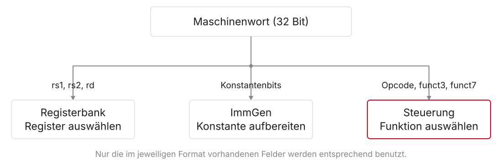
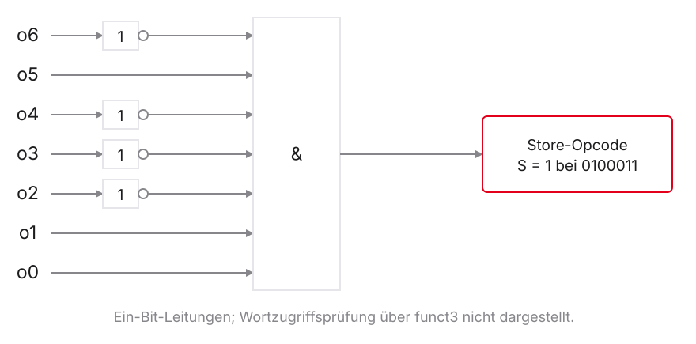
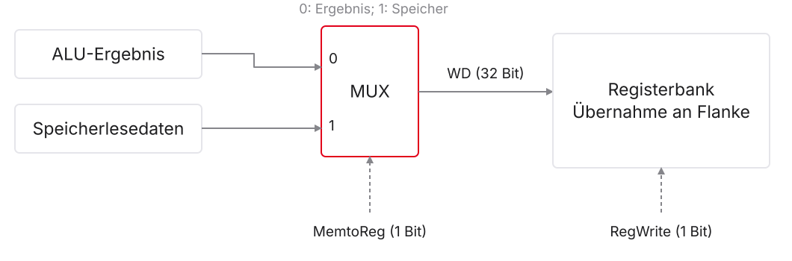
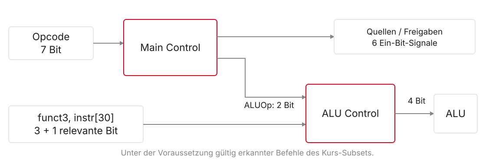
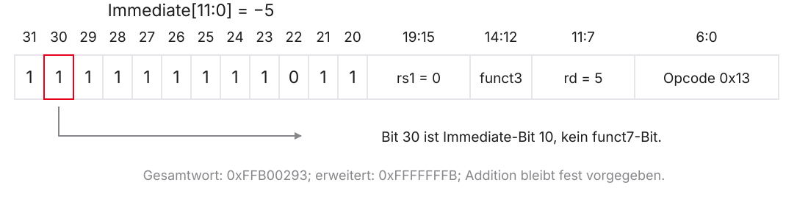
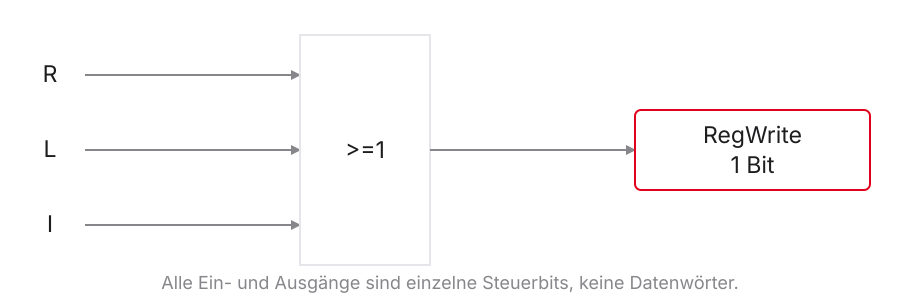
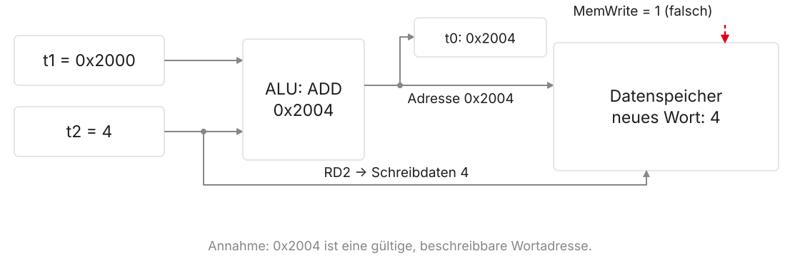

Mikrocomputertechnik 1
Einheit 6: Das Steuerwerk
Das Steuerwerk
Vom vorgegebenen Signal zur begründeten Schaltung
- Bisher: Welche Datenquelle und welches Schreibziel braucht der Befehl?
- Heute: Welche Befehlsbits erzeugen die passenden Steuersignale?
- Wahrheitstabellen aus der Befehlswirkung herleiten
- Hauptsteuerung und konkrete Rechenoperation trennen
- Fehler anhand bestimmter Daten und Adressen erklären
Voraussetzungen aus Einheit 1–5
| Bekannt | Heute weitergeführt |
|---|---|
| UND, ODER, Negation und Multiplexer | Bedingungen für Steuersignale |
| Maschinenwort und Registerfelder | Befehlsfamilie und konkrete Operation |
| Rechnen, Load, Store und Branch | Herleitung der Steuertabelle |
| Wert vor / Zustand nach der Flanke | Auswahl ist noch kein Schreibzugriff |
Unser Modell und seine Grenzen
- Ausgangspunkt:
add,sub,and,or,lw,sw,beq - Gültige Befehle dieses Subsets sind zunächst vorausgesetzt
- 32-Bit-Daten, Instruktionen ohne C-Erweiterung, Little Endian
- Später:
addials ausdrücklich ergänzter Befehl - Keine zusätzlichen Branch-Arten oder Sprünge mit Linkwert
1. Vom Befehlswort zur Steuerfunktion
Derselbe Befehl versorgt mehrere Bausteine

Vier Familien, vier Opcode-Werte
| Unterstützte Befehle | Opcode binär | Hex | Gemeinsame Aufgabe |
|---|---|---|---|
add, sub, and, or |
0110011 |
0x33 |
Register → Rechnung → Register |
lw |
0000011 |
0x03 |
Speicherwort → Register |
sw |
0100011 |
0x23 |
Registerwort → Speicher |
beq |
1100011 |
0x63 |
Register vergleichen → PC wählen |
Opcode-Erkennung ist nicht die gesamte Decodierung
addundsubhaben denselben Opcodelwundswbenötigen auch die passende Wortzugriffskennungbeqbenötigt die Gleichheitsbedingung seiner Befehlsart- Ein nicht unterstütztes Funktionsmuster ist kein Don’t Care
Einen Opcode mit Gattern erkennen

\[S=\overline{o_6}\land o_5\land\overline{o_4}\land\overline{o_3}\land\overline{o_2}\land o_1\land o_0\]
Hauptsignale: Namen und Bitbreiten
| Signalgruppe | Namen | Anzahl Bits |
|---|---|---|
| Quellenwahl | ALUSrc, MemtoReg |
2 |
| Register / Speicher | RegWrite, MemRead, MemWrite |
3 |
| Branch-Freigabe | Branch |
1 |
| Rechenkategorie | ALUOp |
2 |
Sieben benannte Signale, insgesamt acht Bit. PCSrc wird daraus abgeleitet.
Die Steuerung rechnet zwischen den Flanken
- Im Modell: kombinatorische Haupt- und Detailsteuerung
- Kein eigener Ausführungstakt pro Steuerstufe
- Neue Befehlsbits benötigen endliche Decodierlaufzeit
- Vor der Übernahme müssen Daten und Freigaben stabil sein
Wahrheitstabelle, Gatter und Mikroprogramm
- Wahrheitstabelle: Beschreibung einer Funktion
- Gatter oder Nachschlagetabelle: mögliche Realisierungen
- Mikroprogramm: gespeicherte Steuerfolgen mit Ablaufsteuerung
- RISC-V schreibt keine dieser internen Umsetzungen vor
2. Die Haupttabelle aus der Wirkung herleiten
Vier Fragen für jede Tabellenzeile
- Zweiter Rechenoperand: Register oder Immediate?
- Datenspeicher: lesen, schreiben oder unverändert lassen?
- Registerschreiben: erlaubt, und aus welcher Quelle?
- PC: sequenziell oder abhängig vom Vergleich?
Registeroperation: add, sub, and, or
| Entscheidung | Signal | Wert |
|---|---|---|
| Zweites Registerwort wählen | ALUSrc | 0 |
| Rechenergebnis zurückführen | MemtoReg | 0 |
| Zielregister schreiben | RegWrite | 1 |
| Datenspeicher unverändert | MemRead / MemWrite | 0 / 0 |
| Keine Branch-Freigabe | Branch | 0 |
lw: Adresse berechnen, Inhalt übernehmen
| Entscheidung | Signal | Wert |
|---|---|---|
| Offset wählen | ALUSrc | 1 |
| Gelesenes Wort wählen | MemtoReg | 1 |
| Zielregister schreiben | RegWrite | 1 |
| Nur Datenspeicher lesen | MemRead / MemWrite | 1 / 0 |
| Keine Branch-Freigabe | Branch | 0 |
sw: Adresse und Schreibdaten getrennt
| Entscheidung | Signal | Wert |
|---|---|---|
| Offset für die Adresse wählen | ALUSrc | 1 |
| Kein Registerschreiben | RegWrite | 0 |
| Nur Datenspeicher schreiben | MemRead / MemWrite | 0 / 1 |
| Keine Branch-Freigabe | Branch | 0 |
| Register-Rückschreibquelle unerheblich | MemtoReg | X |
beq: Vergleich freigeben, nichts zurückschreiben
| Entscheidung | Signal | Wert |
|---|---|---|
| Zwei Registerwerte vergleichen | ALUSrc | 0 |
| Kein Register- oder Datenzugriff mit Wirkung | RegWrite / MemRead / MemWrite | 0 / 0 / 0 |
| Branch-Prüfung freigeben | Branch | 1 |
| Register-Rückschreibquelle unerheblich | MemtoReg | X |
Auswahl und Übernahme sind verschieden

Don’t Care heißt nicht unbekannt oder hochohmig
- X in der Tabelle: beide Auswahlwerte erfüllen dieselbe Befehlswirkung
- Auf einer konkreten Leitung liegt dennoch ein konkreter Wert an
- Unbekannter Simulationswert und hochohmiger Ausgang sind andere Begriffe
- Nicht benutzte Freigaben sind verbindlich 0
Ein kleines Minimierungsbeispiel
| A | B | f |
|---|---|---|
| 0 | 0 | 0 |
| 0 | 1 | 1 |
| 1 | 0 | 0 |
| 1 | 1 | X |
Mögliche Realisierungen: \(f=\overline{A}\land B\) oder \(f=B\).
Zwischenstand: Quellen und Schreibfreigaben
| Befehl | ALUSrc | MemtoReg | RegWrite | MemRead | MemWrite | Branch |
|---|---|---|---|---|---|---|
| R-Typ | 0 | 0 | 1 | 0 | 0 | 0 |
lw |
1 | 1 | 1 | 1 | 0 | 0 |
sw |
1 | X | 0 | 0 | 1 | 0 |
beq |
0 | X | 0 | 0 | 0 | 1 |
Die konkrete Rechenoperation fehlt noch.
3. Die Rechenoperation zweistufig bestimmen
ALUOp ist die Kategorie, ALUControl das Kommando

Drei verwendete ALUOp-Kategorien
| ALUOp | Aufgabe | Im bisherigen Modell |
|---|---|---|
00 |
Addition fest vorgeben | lw, sw |
01 |
Subtraktion fest vorgeben | beq-Vergleich |
10 |
Registeroperation über Funktionsfelder wählen | add/sub/and/or |
11 |
nicht verwendet | kein unterstützter Fall |
Vier interne ALUControl-Codes
| ALUControl | Rechenfunktion |
|---|---|
0000 |
bitweises UND |
0001 |
bitweises ODER |
0010 |
Addition |
0110 |
Subtraktion |
Diese vier Bit sind weder Opcode noch ALUOp.
Registeroperationen: Funktionsfelder auswerten
| Operation | funct3 | funct7 | ALUControl |
|---|---|---|---|
add |
000 |
0000000 |
0010 |
sub |
000 |
0100000 |
0110 |
and |
111 |
0000000 |
0000 |
or |
110 |
0000000 |
0001 |
Voraussetzung: Opcode 0110011 und ALUOp = 10.
Dieselben Operanden, vier Ergebnisse
Ausgangswerte: t1 = 7, t2 = 3.
| Befehl | Rechnung im unteren Nibble | Ergebnis in t0 |
|---|---|---|
add t0, t1, t2 |
\(7+3\) | 10 |
sub t0, t1, t2 |
\(7-3\) | 4 |
and t0, t1, t2 |
0111 UND 0011 |
3 |
or t0, t1, t2 |
0111 ODER 0011 |
7 |
Die vollständige Detailzuordnung unseres Subsets
| ALUOp | Zusatzbedingung | ALUControl |
|---|---|---|
00 |
bereits gültiger Additionsfall | 0010 |
01 |
bereits gültiger beq |
0110 |
10 |
gültige add-Felder |
0010 |
10 |
gültige sub-Felder |
0110 |
10 |
gültige and-Felder |
0000 |
10 |
gültige or-Felder |
0001 |
4. Transfer: das Modell um addi erweitern
addi verbindet zwei bekannte Datenwege
- Zweiter Operand: Immediate wie bei
lw - Rückschreibquelle: Rechenergebnis wie bei
add - Kein Datenspeicherzugriff und kein Branch
- Opcode
0010011, funct3000
Warum Bit 30 hier keine Subtraktion bedeutet

Beispiel: addi t0, x0, -5 → Maschinenwort 0xFFB00293.
Die neue Hauptsteuerzeile für addi
| Signal | Wert |
|---|---|
| ALUSrc | 1 |
| MemtoReg | 0 |
| RegWrite | 1 |
| MemRead / MemWrite | 0 / 0 |
| Branch | 0 |
| ALUOp | 00 |
Danach: ALUControl = 0010, auch bei gesetztem Bit 30.
Verständnischeck: auch eine positive Konstante
- Ist die Konstante im zwölf Bit breiten Feld darstellbar?
- Welche ALUOp- und ALUControl-Werte gelten?
- Welcher Wert wird in
t0geschrieben?
5. Von Tabellen zu Bedingungen und Fehlerfolgen
Die erweiterte Tabelle: Quellen und Freigaben
| Befehl | ALUSrc | MemtoReg | RegWrite | MemRead | MemWrite | Branch |
|---|---|---|---|---|---|---|
| R-Typ | 0 | 0 | 1 | 0 | 0 | 0 |
lw |
1 | 1 | 1 | 1 | 0 | 0 |
sw |
1 | X | 0 | 0 | 1 | 0 |
beq |
0 | X | 0 | 0 | 0 | 1 |
addi |
1 | 0 | 1 | 0 | 0 | 0 |
Die erweiterte Tabelle: Rechenaufgabe
| Befehl | ALUOp | Detailentscheidung |
|---|---|---|
add/sub/and/or |
10 |
funct3 und funct7 |
lw, sw, addi |
00 |
Addition steht fest |
beq |
01 |
Subtraktion zum Gleichheitstest |
Die Tabellen beschreiben gemeinsam dieselbe Steuerfunktion.
Bedingungen aus erkannten Befehlsgruppen
R: Registergruppe, L: lw, S: sw, B: beq, I: addi.
\[\mathrm{RegWrite}=R\lor L\lor I\]
\[\mathrm{ALUSrc}=L\lor S\lor I\]
\[\mathrm{MemRead}=L,\qquad\mathrm{MemWrite}=S,\qquad\mathrm{Branch}=B\]
Ein Registerschreibsignal als ODER-Schaltung

Zwei zulässige MemtoReg-Funktionen
Für gültige Befehle unseres erweiterten Modells sind beide zulässig:
\[\mathrm{MemtoReg}_a=L\]
\[\mathrm{MemtoReg}_b=L\lor S\]
Sie unterscheiden sich nur bei sw, wo RegWrite = 0.
PCSrc bleibt eine abgeleitete Entscheidung
\[\mathrm{PCSrc}=\mathrm{Branch}\land\mathrm{Zero}\]
| Befehl / Ergebnis | Branch | Zero | PCSrc |
|---|---|---|---|
beq, gleiche Werte |
1 | 1 | 1 |
beq, ungleiche Werte |
1 | 0 | 0 |
sub, Ergebnis null |
0 | 1 | 0 |
Fehlerfall: MemWrite ist bei add irrtümlich 1

Fehlerfall: RegWrite ist bei sw irrtümlich 1
Zusätzlich fehlerhaft: RegWrite = 1, MemtoReg = 0.
- Speicher schreibt weiterhin 37 an
0x200C - Bits 11:7 enthalten
01100, also die Nummer 12 - Register
x12erhält zusätzlich den Adresswert0x200C
Verständnischeck: Welche Änderung bleibt folgenlos?
Bei einem korrekten sw wird genau ein Signal geändert:
MemtoRegwechselt von 0 auf 1.RegWritewechselt von 0 auf 1.MemWritewechselt von 1 auf 0.
Welche Änderung erhält die Befehlswirkung sicher?
6. Auf Papier vorhersagen, in Ripes vergleichen
Was sich in Ripes unterscheiden kann
| Funktion | Kursmodell | In der verwendeten Version prüfen |
|---|---|---|
| Branch-Vergleich | Recheneinheit subtrahiert | eigener Registervergleicher möglich |
| Zielbildung | zusätzlicher Addierer | Haupt-Recheneinheit möglich |
| Register-Rückschreibquelle | Ergebnis oder Speicher | zusätzliche Linkwertquelle möglich |
| Steueranzeige | Kursnamen und Codierung | konkrete Portnamen, Breiten, Werte |
Ein Beobachtungsschritt hat ein Vorher und ein Nachher
- RV32-Single-Cycle wählen, C deaktivieren
- Bei der interessierenden Maschineninstruktion anhalten
- Vor Clock Quellen, Rechenfunktion und Freigaben notieren
- Einmal Clock, dann Register, Speicher und PC prüfen
- Beobachtetes Portformat von der Papiertabelle trennen
Das vorhandene Beobachterprogramm
Datei: beispiele/vl6_mux_beobachter.s.
- Datenwort
slotwird mit 0 angelegt la s1, slotbereitet seine tatsächliche Adresse vor- Ab Label
Beobachtungbeginnt der zu untersuchende Ablauf - Vor
Pruefpunktanhalten; Exit gehört nicht zur Tabelle
Der Datenabschnitt des Traces
Anfang: Wort an \(B\) ist 0.
| Ausgeführter Befehl | Änderung nach Clock |
|---|---|
addi t0, x0, 5 |
t0 = 5 |
add t1, t0, t0 |
t1 = 10 |
sw t1, 0(s1) |
Wort an \(B\) ist 10 |
lw t2, 0(s1) |
t2 = 10 |
Die Branches machen den Prüfpunkt eindeutig
| Aktueller Befehl | Bedingung | Folge |
|---|---|---|
beq t0, t1, Falsch_angenommen |
\(5=10\) ist falsch | nächste Instruktion |
addi t3, x0, 1 |
keine Branch-Bedingung | t3 = 1 |
beq t1, t2, Pruefpunkt |
\(10=10\) ist wahr | Sprung zum Prüfpunkt |
Dort: t0 = 5, t1 = 10, t2 = 10, t3 = 1, Speicherwort 10.
Ihr Prüfverfahren für eine unbekannte Tabellenzeile
- Gültigen Befehl und Format feststellen
- Operanden und Rechenfunktion bestimmen
- Schreibziel, Schreibwert und Freigabe begründen
- Branch-Freigabe vom Sprungerfolg trennen
- X nur bei nachweislich unerheblicher Auswahl verwenden
Vom Steuerwerk zur nächsten Vorlesung
- Datenweg und Steuerung erfüllen gemeinsam die Befehlswirkung
- Zweistufige Decodierung bleibt hier innerhalb eines Takts
- Unterschiedliche interne Codes können dieselbe Wirkung erzielen
- Nächste Frage: Wie lassen sich mehrere Befehle zeitlich überlappen?